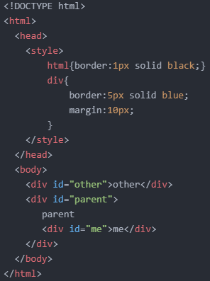
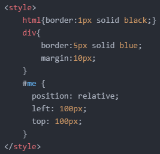
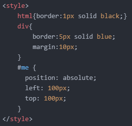
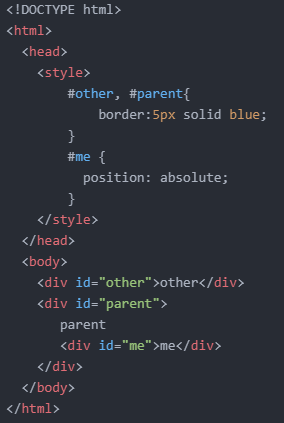
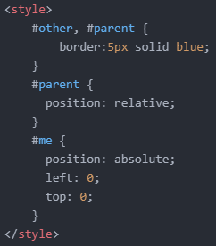
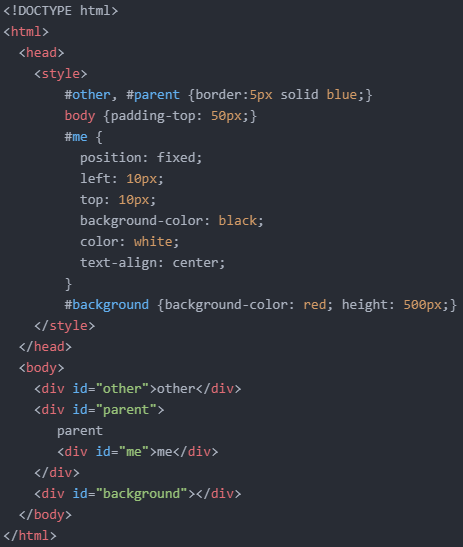

- 포지션에 대해 알아보기
- box-sizing 속성에 대해 알아보기
- 마진 상쇄(겹침) 현상(Margin-collapsing)에 대해 알아보기
오늘의 첫 번째 목표는 '포지션'에 대해 알아보는 것입니다.
박스 모델이 간격과 관련 있었다면, 포지션은 각각의 요소들의 위치와 관련 있는 주제입니다.
예를 들어, 다음과 같은 코드가 있습니다.

여기서 'me'라는 텍스트를 대각선 아래로 이동시키고 싶습니다.
그리고 이때 필요한 것이 'position' 속성입니다.
다음과 같이 코드를 작성해 줍니다.

'left:100px;' 선언은 왼쪽으로 100px만큼 이동하라는 뜻이 아닙니다.
왼쪽에서 100px만큼 떨어지라는 의미입니다.
마찬가지로 'top:100px;' 선언은 위에서 100px만큼 떨어지라는 의미입니다.
그러면 대각선 아래 방향으로 해당 요소가 이동하게 됩니다.
여기까지는 이동 대기 상태고, 'position: relative;'라는 선언을 해줘야 이동하게 됩니다.
그 결과는 아래와 같습니다.
'relative'는 '상대적인'이라는 뜻입니다.
즉, 'id="parent"'라는 부모 요소를 기준으로 왼쪽에서 100px, 위에서 100px만큼 떨어지라는 뜻입니다.
그런데 'position: relative;'라는 선언을 하지 않는다면 'left:100px;', 'top:100px'와 같은 선언이 있어도 이동하지 않게 됩니다.
왜냐하면 'position: static'라는 선언이 기본으로 설정되어 있기 때문입니다.
정적인 상태가 기본 설정이므로 'position: relative;' 선언으로 정적인 상태를 동적인 상태로 바꿔주는 것입니다.
그리고 하나 더,
방향을 지정하는 속성들에도 우선순위가 있는데 다음과 같습니다.
left>right / top>bottom
right나 bottom을 100px로 설정해도 left나 top이 설정되어 있다면 아무런 효과도 기대할 수 없을 것입니다.
상대적인 위치가 있다면 절대적인 위치가 있기 마련입니다.
즉, 'id="parent"'라는 요소로부터 출발하지 않고 페이지 왼쪽 상단 즉, 'html' 요소로부터 출발할 수 있다는 것입니다.
'position: relative;' 선언을 다음과 같이 'position: absolute;'로 바꿔주면 됩니다.

'absolute' 선언을 한 순간, 부모 요소와의 자식 요소의 연이 끊기게 됩니다.
그래서 조금 전 예시에서 봤던 'parent' 요소의 영역 크기와는 달리, 자기 자신에 딱 맞는 영역 크기로 바뀌게 되는 것입니다.
마찬가지로 'me' 요소의 영역 크기도 자기 자신에 딱 맞게 바뀌게 되는 것입니다.
그 다음으로, 만약 다음과 같이 'position: absolute;'만 선언하고 방향과 크기를 지정하지 않는다면 어떻게 될까요?
참고로, 좀 더 쉬운 설명을 위해 코드를 바꿨습니다.

그러면 아래와 같이 절대위치의 기준이 부모 요소가 되는 것을 알 수 있습니다.
이때, 'left: 0;', 'top: 0;'과 같은 선언도 방향과 크기를 지정한 것으로 간주합니다.
즉, 'position: absolute;' 선언만 한 것과는 전혀 다르다는 것이죠.
다시 말하자면, 'position: absolute;' 선언을 하고 방향과 크기를 지정했을 경우, 페이지 가장 좌측 상단 즉, 'html' 요소를 절대위치 기준으로 삼고
'position: absolute;' 선언만 할 경우, 부모 요소를 절대위치 기준으로 삼게 됩니다.
여기서 더 나아가보겠습니다.
만약 다음과 같이 'me' 요소의 부모 요소인 'parent' 요소에 'position: relative;'를 선언하면 'me' 요소의 위치는 어떻게 될까요?

보시다시피, 'parent' 요소를 기준으로 왼쪽에서 0px, 위에서 0px만큼 이동한 것을 알 수 있습니다.
절대위치에 관하여 최종적으로 정리해 보겠습니다.
1. 부모 요소가 'position: static;'인 경우
- 'position: absolute;' 선언을 하고 방향과 크기를 지정하면, 페이지 가장 좌측 상단 즉, 'html' 요소를 절대위치 기준으로 삼는다.
- 'position: absolute;' 선언만 할 경우, 부모 요소를 절대위치 기준으로 삼는다.
2. 부모 요소가 'position: static;'이 아닌 경우
- 부모 요소를 절대위치 기준으로 삼는다.
마지막으로 이번에는 요소의 위치를 고정시켜보겠습니다.
이때는 다음과 같이 'position: fixed;' 선언을 해주면 됩니다.
참고로, 쉬운 설명을 위해 코드를 조금 변경했습니다.

스크롤을 내려도 'me'라는 텍스트가 화면에 고정되는 것을 알 수 있습니다.
'position: fixed' 선언도 'absolute'와 마찬가지로, 선언한 순간 부모 요소와의 연을 끊게 됩니다.
그래서 자기 자신에 딱 맞는 영역 크기로 바뀌게 됩니다.
따라서 'width'나 'height' 속성으로 영역 크기를 직접 조정해 줄 필요가 있습니다.
저는 'width: 100%;', 'height: 40px;'로 선언했고 그 결과는 아래와 같습니다.
이 fixed 타입은 개인적으로 아주 유용한 타입이라고 생각하는 바입니다.
오늘은 여기까지 하겠습니다.
그럼 내일도 화이팅!